Web components with StencilJS
by @KwintenP
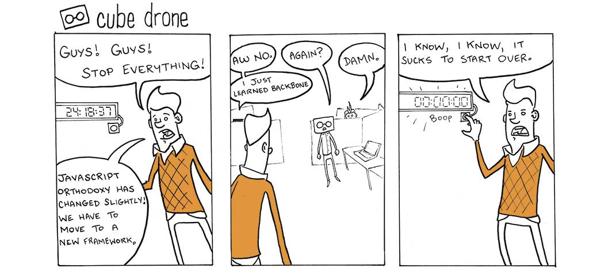
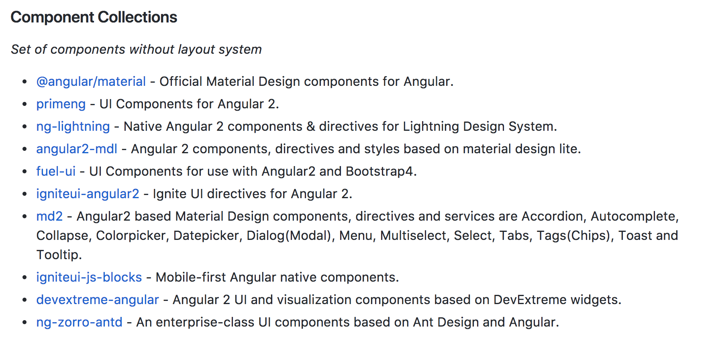
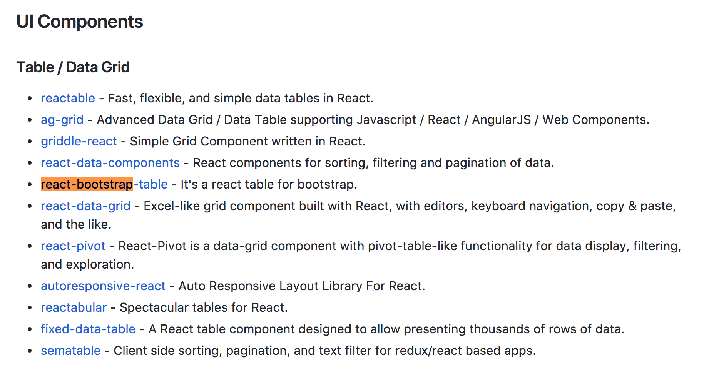
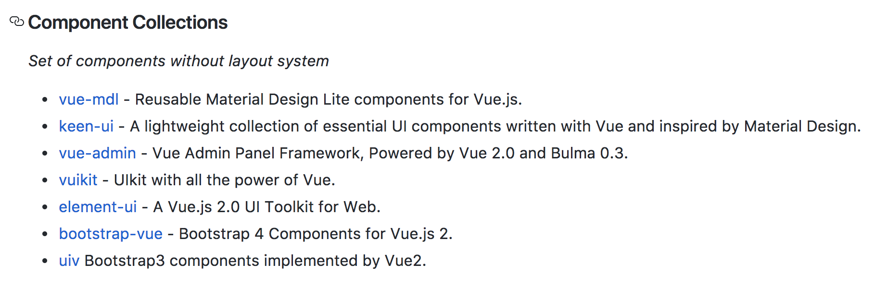
Freelance Frontend Architect

Founder of Strongbrew
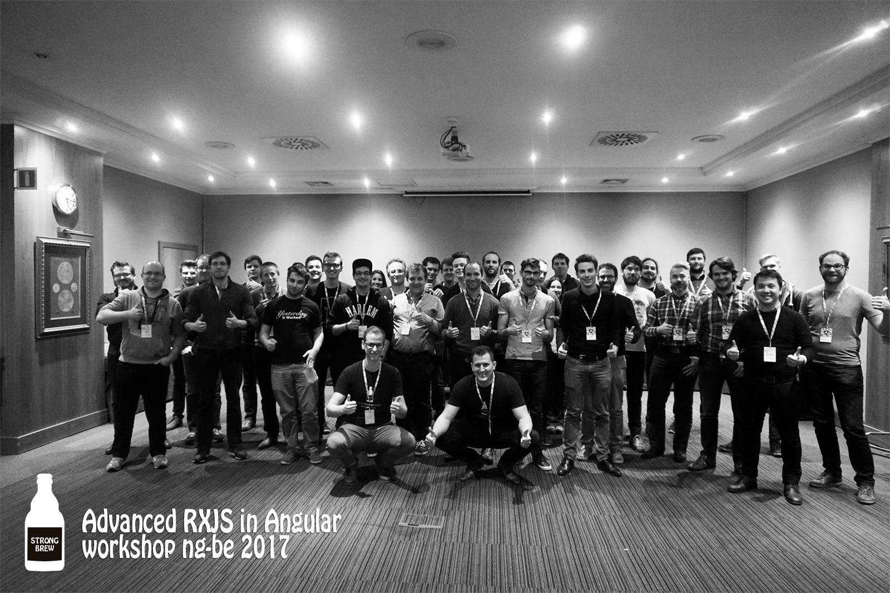
Blog
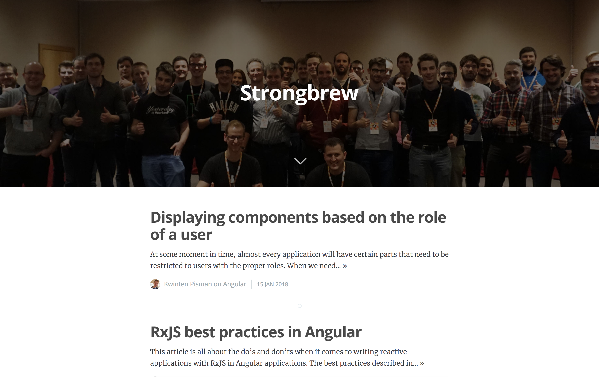
 Html templates
Html templates
 Shadow DOM
Shadow DOM
 Custom elements
Custom elements
Html templates
Declaring a template

Adding it to the DOM
var t = document.querySelector('#mytemplate');
var clone = document.importNode(t.content, true);
document.body.appendChild(clone);
Shadow dom
const helloWorld = document.createElement('hello-world');
const shadowRoot = helloWorld.attachShadow({mode: 'open'});
shadowRoot.innerHTML = 'hello Kwinten
';
Allows to attach an encapsulated DOM-tree
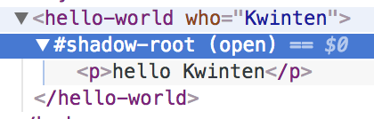
Custom elements are natively supported javascript components
Custom element example

Custom elements - attributes
class HelloWorld extends HTMLElement {
static get observedAttributes() {
return ["who"];
}
attributeChangedCallback(name, oldValue, newValue) {
console.log("the name has changed");
this._who = newValue;
this._updateRendering();
}
}Custom elements - Properties
class HelloWorld extends HTMLElement {
get who() {
return this._who;
}
set who(v) {
this.setAttribute("who", v);
}
}Custom elements - Update DOM
class HelloWorld extends HTMLElement {
_updateRendering() {
if(!this.shadowRoot) {
this.attachShadow({mode: "open"});
}
const data = "hello " +
(this._who ? this._who : "world");
this.shadowRoot.innerHTML = data;
}
}Defining custom elements
customElements.define("hello-world", HelloWorld);Using custom elements
document.body.appendChild(new HelloWorld());
document.body.appendChild(new HelloWorld());Lifecycle of a webcomponent
- Constructor --> Creation
- connectedCallback --> Added to DOM
- disconnectedCallback --> Removed from DOM
- attributeChangedCallback --> Attribute changed
Can I use this?
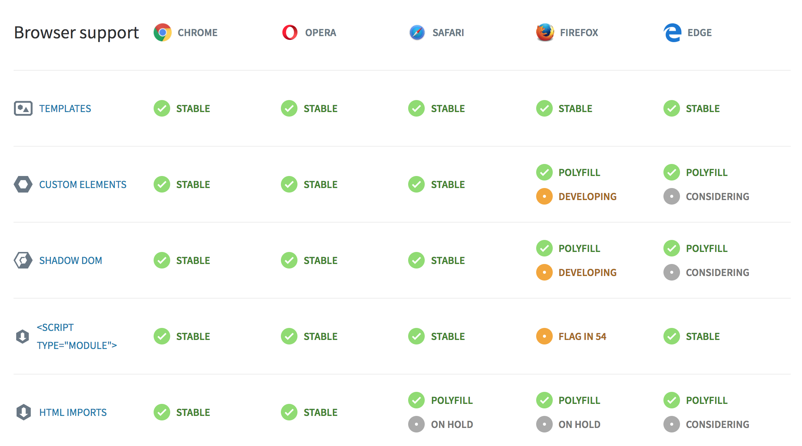Custom elements are awesome!
Then why don't we use them more?

What are we missing?
- Manual DOM manipulation
- Rendering speed
- No framework features

Wait! Can't I use jQuery for that?
Introducing stenciljs
StencilJS
A framework for web components
A compiler for web components
What is stencil?
- Compiler to generate custom elements
- Stencil does NOT exist at runtime
- Facilitates the generation of WC
- Created by Ionic and the basis for Ionic 4
Example Stencil component
import { Component, Prop } from '@stencil/core';
@Component({
tag: 'my-name',
styleUrl: 'my-name.scss',
shadow: true,
})
export class MyName {
@Prop() name: string;
render() {
return Hello, my name is {this.name}
;
}
}
How does it work
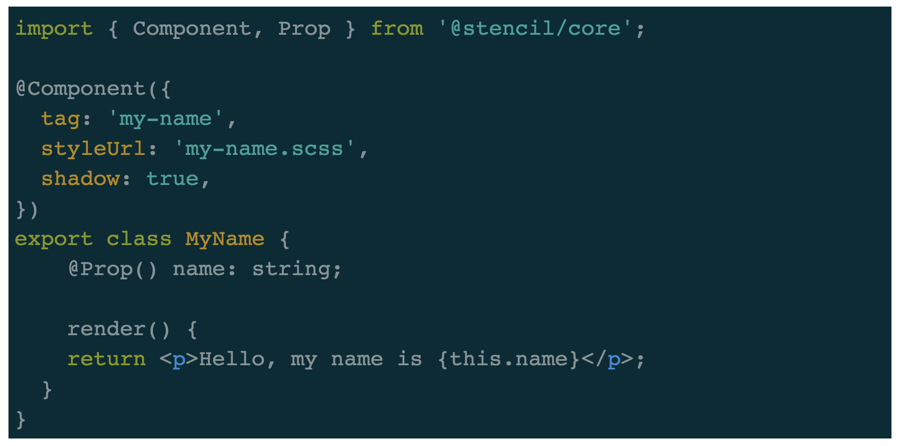
Stencil API
| @Component | Define information about the component |
| @Prop | Property on the custom element |
| @Watch | Called when the prop has changed |
| @Event | Custom event on the component |
| @Listen | Listen to events from children |
| @Element | Get reference to the DOM element |
| @State | Manage internal state that triggers rendering |
| @Method | Publicly available method |
Component lifecycle
@Component({
tag: 'my-component'
})
export class MyComponent {
componentWillLoad() {}
componentDidLoad() {}
componentWillUpdate() {}
componentDidUpdate() {}
componentDidUnload() {}
}Custom events
@Component({
tag: 'demo-shopping-list-overview',
styleUrl: 'shopping-list-overview.component.scss'
})
export class ShoppingListOverview {
@Event() removeItem: EventEmitter;
@Listen('removeItem')
removeItem(event: CustomEvent) {
event.stopPropagation();
this.removeItem.emit({id: event.id});
}
}How does stencil facilitate the creation
- Uses Virtual DOM for better performance
- Automatic updating on changes
- Async rendering system like React Fiber
- Uses JSX for markup
- Built on typescript for static type checking
- Familiar APIs from other frameworks
Components with stencil
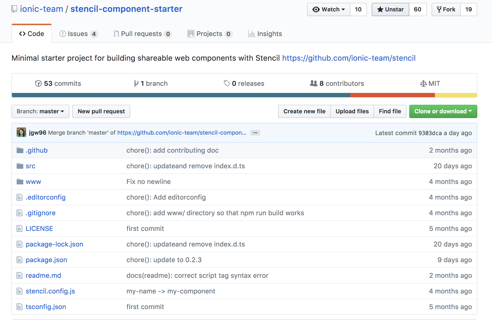Why stencil?
- Bundle size (core only 5,4kb!)
- Use only native browser APIs
- Auto loads polyfills if needed
- Interoperability with other frameworks
- No need to change when a new framework arrives
Build entire apps with Stencil?
PWA
Building apps with stencil
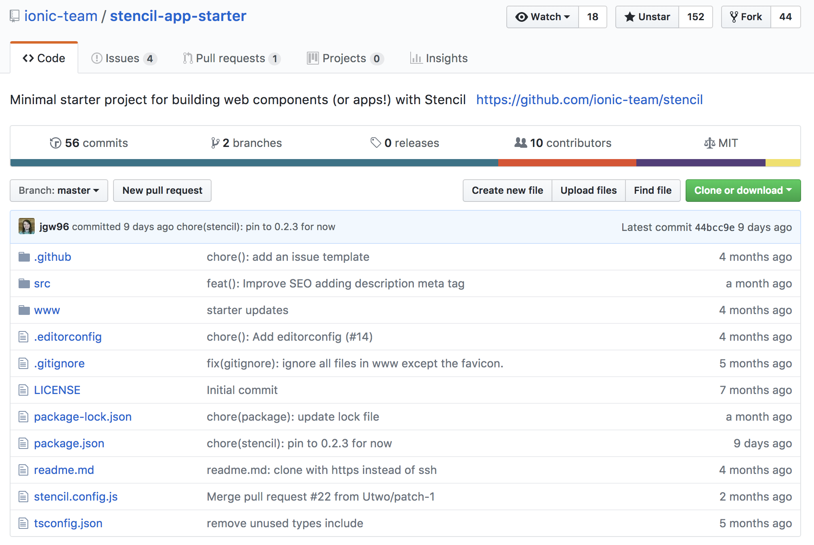How stencil supports PWA's
- Automatic service worker generation (workbox)
- Automatic manifest generation
- Support for Lazy loading
- Prerendering
- Easy SSR
Lighthouse
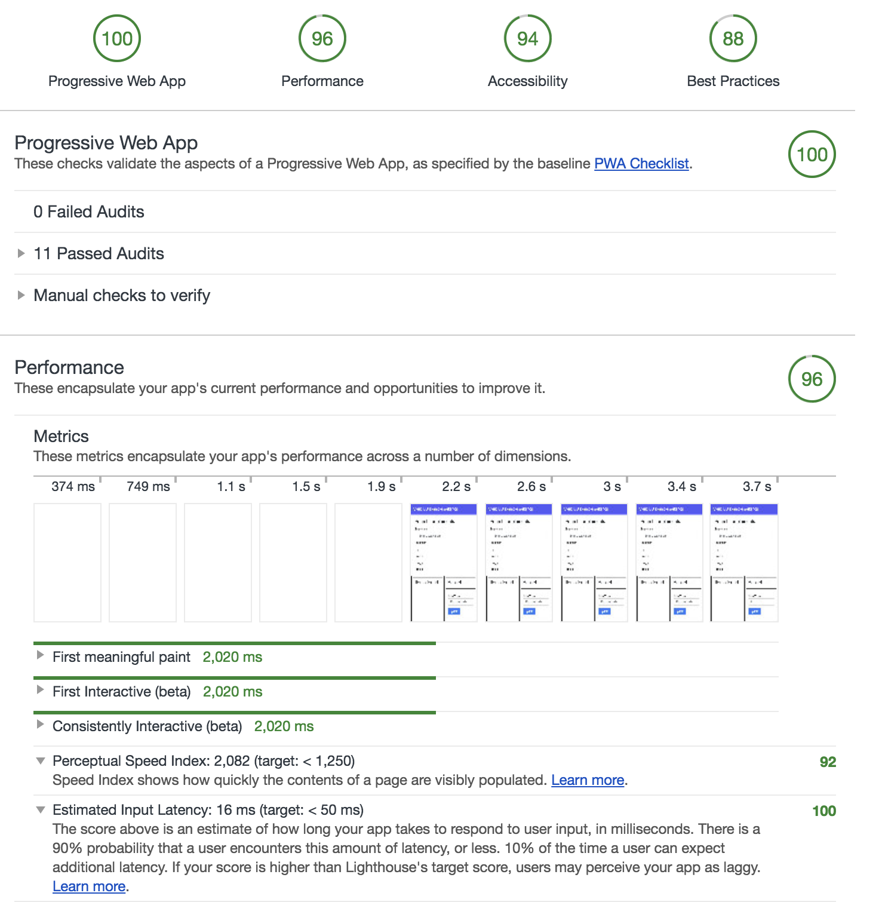Integration in Angular
@NgModule({
declarations: [
AppComponent
],
imports: [
BrowserModule
],
providers: [],
bootstrap: [AppComponent],
schemas: [
CUSTOM_ELEMENTS_SCHEMA
]
})
export class AppModule { }
Integration in React
class HelloMessage extends React.Component {
render() {
return Hello {this.props.name} !;
}
}VueJS
Vue.config.ignoredElements = [
'hello-world'
]What about after Stencil
Web components as an architecture
Conclusion
- Web components are native components
- Stencil allows us to create WC easily
- Stencil is built using framework features
- No longer create the same components over and over
- Provides easier upgrade paths